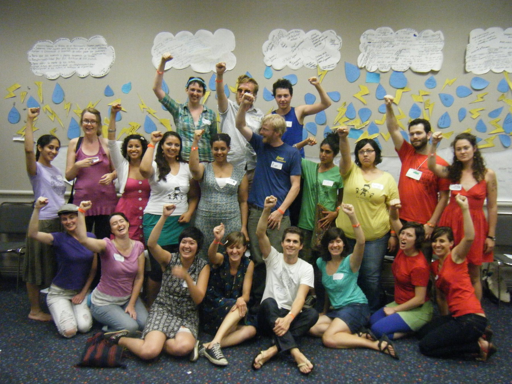

Other Collectives & the ICCC
The Intergalactic Conspiracy* of Childcare Collectives (ICCC) is a network of allied childcare collectives from different cities across the US who provide childcare for organizations building social justice movements. Through this work, we aim to help center and prioritize the participation and leadership of women and trans caregivers and families of color in our struggle for collective liberation, and to help build a sustainable, intergenerational movement.

We first came together for the 2010 US Social Forum to create a workshop that addressed how childcare was important to sustainable and intergenerational movement building. The ICCC came together again to organize the AMC Kids Track in 2011 to plan a series of workshops for kids that uses a story narrative to connect media with social justice. The AMC gives ICCC members a yearly collaborative project and it has been a wonderful launching point for us to work together collectively. We will be hosting a radical childcare network gathering at the AMC this year, and folks from ChiChiCo and several other collectives from other states will be busy coordinating it in the coming months.
* We chose the word "conspiracy" for its root meaning, "to breathe together."
Links to Childcare Collectives in the Intergalactic Conspiracy of Childcare Collectives:
- Kelli's Childcare Collective (Atlanta)
- Bay Area Childcare Collective
- Regeneración Childcare (NYC)
- DC Childcare Collective
- Kidz City! (Baltimore)
- La Semilla Childcare Collective de Austin
- Philly Childcare Collective And Childcare Collectives Beyond:
- Montreal Childcare Collective
- Crescent City Childcare Collective
Here's the description of our plans for AMC 2012:
This Network Gathering will be a space to discuss shared politics and our vision for a movement that prioritizes kid friendly spaces, intergenerational invovlement, and communal caretaking. The day will include discussion on why we are doing this work and why it’s important, a creative project that will give us something tangible to leave with and share, and general relationship building. The room is open for anyone who is interested in radical childcare collectives, but we will be focusing more on vision, networking, and our experiences in doing this work, not on how to start a new collective. We will be also be tabling throughout the weekend which will be a time for more intra-collective nuts and bolts discussions, as well as building new relationships with potential new collectives.